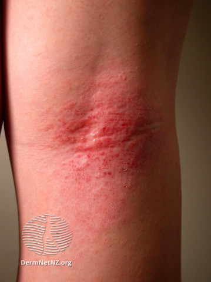
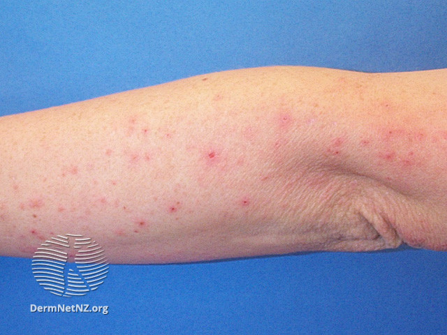

Atopic Eruption of Pregnancy
- Most common skin condition causing pruritus in pregnancy (etiology of ~ 50% rashes in pregnancy).1
- Basically eczema that occurs during pregnancy in either women that have never had eczema or those with pre-existing eczema.1
- Also has been called "eczema of pregnancy", "prurigo of pregnancy" and "pruritic folliculitis of pregnancy".1
- Onset 1st or 2nd trimester.1
- Trunk and limbs.1
- Two lesion types:
- 2/3 cases E-type (eczema-type):1
- Pruritic eczematous rash face, eyelids, neck, antecubital and popliteal fossae1
- 1/3 cases P-type (prurigo-type):1
- Pruritic papules abdomen, back and extremities.1
- 2/3 cases E-type (eczema-type):1

Source: DermNet. https://dermnetnz.org/topics/atopic-dermatitis/.

Source: DermNet. https://dermnetnz.org/topics/prurigo-of-pregnancy/.
- None except possible risk of newborn developing atopic dermatitis.1
- Topical emollients:1
- Calamine lotion.
- Antihistamines:1
- Diphenhydramine.
- Hydroxyzine.
- Topical steroids.1
- Oral steroids if severe.1
- UVB phototherapy.1
- PROLOG: Obstetrics, Eighth Edition. Questions 144-147.